Step 1:
Refer to the circuit diagram in Figure 8.2 in the textbook.
(a)
Drain currents are,
The supply voltages are,
The trans-conductance parameter is
Width-to-length ratio is,
The threshold voltage is,
The biasing current is, 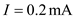
The drain resistance is, 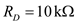.
Since  and
and  are matched, the current
are matched, the current  will divide equally between the two transistors. Thus, .
will divide equally between the two transistors. Thus, .
We see that
The drain current of  can be write as,
can be write as,

Rewrite the equation.
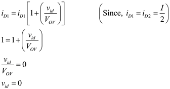
Therefore, the input differential voltage is .
Step 2:
The overdrive voltageis,
Substitute in the above equation
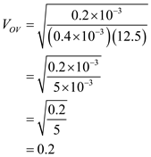
Therefore, the overdrive voltage is .
Step 3:
The gate-to-source voltage for  is,
is,
Substitute in the equation.
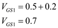
Therefore, the gate-to-source voltage  is .
is .
Step 4:
Apply Kirchhoff’s voltage law to the circuit.
Substitute in the equation.

Therefore, the current source voltage is .
Step 5:
The drain voltage for

is,
Substitute in the equation.
Therefore, the drain voltage for  is .
is .
Step 6:
The drain voltage for  is,
is,
Substitute 1 for  , for
, for  and
and  for
for 
Therefore, the drain voltage for  is .
is .
Step 7:
The differential output voltage is,
Therefore, the differential output voltage is
Step 8:
(b)
Drain currents are,
The drain current of  can be write as,
can be write as,
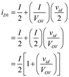
Substitute corresponding values.
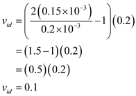
Therefore, the input differential voltage is
Step 9:
Use Kirchhoff’s voltage law to the circuit, the source voltage can be write as,
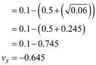
Therefore, the current source voltage is 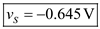.
Step 10:
The drain voltage for

is,

Substitute  in the equation.
in the equation.
Therefore, the drain voltage for  is .
is .
Step 11:
The drain voltage for  is,
is,

Substitute in the equation.
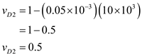
Therefore, the drain voltage for  is 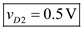.
is 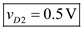.
Step 12:
The differential output voltage is,
Therefore, the differential output voltage is .
Step 13:
(c)
drain currents are,
When  conducts, the value of
conducts, the value of  at which the entire bias current I is steered into
at which the entire bias current I is steered into  is,
is,
Substitute  in the equation.
in the equation.
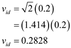
Therefore, the input differential voltage is
Step 14:
When  conducts, the source voltage is,
conducts, the source voltage is,
Substitute  in the equation
in the equation
Therefore, the current source voltage is 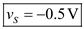.
Step 15:
The drain voltage for  is,
is,
Substitute in the equation.
Therefore, the drain voltage for  is .
is .
The drain voltage for  is,
is,
Substitute corresponding values.
Therefore, the drain voltage for  is .
is .
Step 16:
The differential output voltage is
Therefore, the differential output voltage is  .
.
Step 17:
(d)
Drain currents are,
The drain current of  can be write as
can be write as
Substitute in the equation.
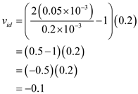
Therefore, the input differential voltage is 
Step 18:
Using Kirchhoff’s voltage law to the above circuit, the source voltage can be write as,
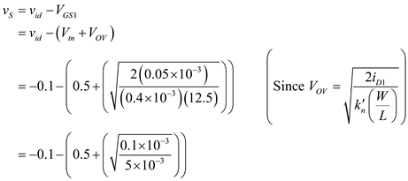
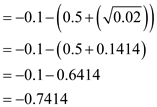
Therefore, the current source voltage is .
Step 19:
The drain voltage for  is,
is,
Substitute  in the equation.
in the equation.
Therefore, the drain voltage for  is .
is .
The drain voltage for  is,
is,

Substitute  in the above equation
in the above equation
Therefore, the drain voltage for  is .
is .
Step 20:
The differential output voltage is,
Therefore, the differential output voltage is 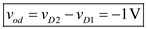.
Step 21:
(e)
Drain currents are,
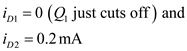
When  conducts, the value of
conducts, the value of  at which the entire bias current I is steered into
at which the entire bias current I is steered into  is
is
Substitute  in the above equation
in the above equation
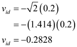
Therefore, the input differential voltage is
Step 22:
When  conducts, the source voltage is
conducts, the source voltage is
Substitute  in the above equation
in the above equation
Therefore, the current source voltage is  .
.
Step 23:
The drain voltage for  is,
is,

Substitute in the above equation
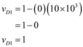
Therefore, the drain voltage for  is 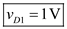.
is 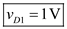.
Step 24:
The drain voltage for  is,
is,
Substitute in the above equation
Therefore, the drain voltage for  is .
is .
Step 25:
The differential output voltage is,
Therefore, the differential output voltage is  .
.